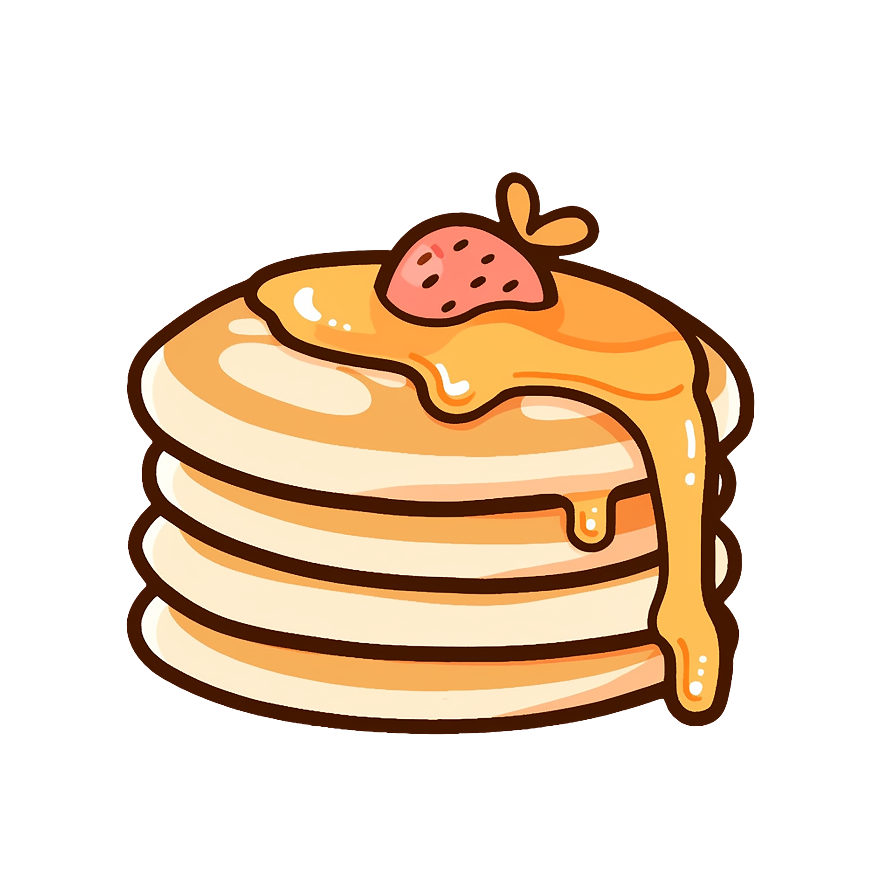

Back Home
Flour
Sugar
Baking Powder
Baking Soda
Salt
Milk
Butter
Vanilla Extract
Eggs
Combine together the flour, sugar (or sweetener), baking powder, baking soda and salt in a large-sized bowl. Make a well in the centre and add the milk, slightly cooled melted butter, vanilla and egg.
Use a wire whisk to whisk the wet ingredients together first before slowly folding them into the dry ingredients. Mix together until smooth
Set the batter aside and allow to rest while heating up your pan or griddle.
Heat a nonstick pan or griddle over low-medium heat and wipe over with a little butter to lightly grease pan. Pour ¼ cup of batter onto the pan and spread out gently into a round shape with the back of your ladle or measuring cup.
When the underside is golden and bubbles begin to appear on the surface, flip with a spatula and cook until golden. Repeat with remaining batter.